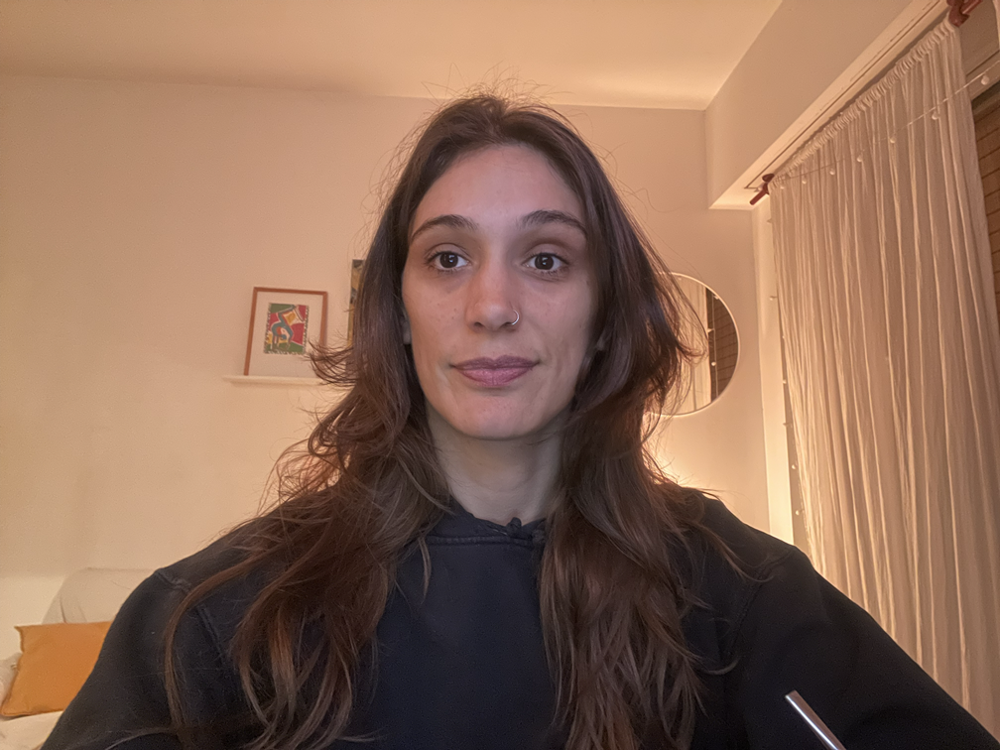

Me gusta practicar Yoga y compartirlo con los demas, soy profesora pero hace un año que no ejerzo. Mi parte favorita es poder compartirlo con los demas y demostrarles que pueden hacer cosas que creian imposibles.
No me gusta cuando se frustran antes de intentarlo, por ejemplo para mi programar siempre fue cosa de cientificos de la NASA, y aca me ves, haciendo un cv en HTML.
Otra cosa que no me gusta es la foto que use para el cv, no me habia dado cuenta de que no tengo ninguna foto decente en horizontal. Creo pertinente culpar a las redes sociales que pondera el formato vertical y veo como eso de alguna manera nos condiciona hasta en la manera de retratarnos.